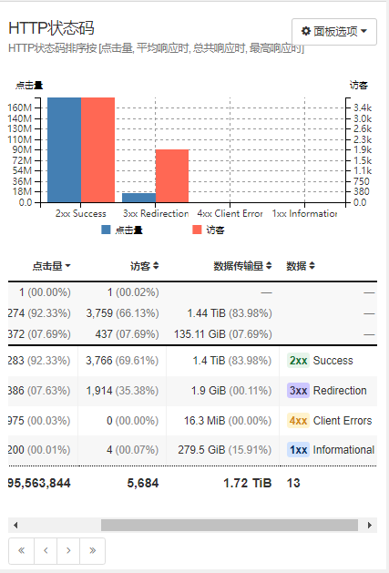

1. GoAccess爬虫黑名单
致读者: 点击上方 “雪之梦技术驿站” → 点击右上角“ ... ”→ 点选“设为星标★ ” 加上星标，就不会找不到我啦！
偷偷溜进文章的小广告，别害羞，点进去瞅瞅，说不定能发现什么宝藏呢！文末那个也别错过，说不定是通往秘密花园的钥匙哦！
1.1. 前言
最近服务器安装了GoAccess分析日志,每天都有新发现,看到Crawler占比有点大,还是要搞清楚哪些是非法爬虫,那些是可以接受的爬虫.
操作系统
操作系统排序按 [点击量, 平均响应时, 总共响应时, 最高响应时]
浏览器
浏览器排序按 [点击量, 平均响应时, 总共响应时, 最高响应时]
通过上述面板均可发现有不少Crawler爬虫类,点开还能看到具体的明细,这样就好办了.看谁不爽拉黑谁!

1.2. 思路
结合自身真实数据分析以及搜索引擎二次确认,归类总结了以下爬虫,简单分类了两种: 有用爬虫和无用爬虫
1.2.1. 确定黑名单用户代理
重点需要关注无用爬虫,屏蔽拉黑减少无用流量.
值得注意的是,需要再次确认这些爬虫访问的url是否恶意来最终确认是否要拉黑!
有用爬虫
搜索类爬虫
- Baiduspider/2.0 百度爬虫
Mozilla/5.0 (compatible; Baiduspider/2.0; +http://www.baidu.com/search/spider.html)
- Baiduspider-render/2.0 百度
Mozilla/5.0 (compatible; Baiduspider-render/2.0; +http://www.baidu.com/search/spider.html)
- Bytespider 字节跳动爬虫
Mozilla/5.0 (Linux; Android 5.0) AppleWebKit/537.36 (KHTML, like Gecko) Mobile Safari/537.36 (compatible; Bytespider; https://zhanzhang.toutiao.com/)
- Sogou 搜狗
Sogou web spider/4.0(+http://www.sogou.com/docs/help/webmasters.htm#07)
- bingbot/2.0 必应爬虫
- Googlebot/2.1 谷歌
Mozilla/5.0 (compatible; Googlebot/2.1; +http://www.google.com/bot.html)
- Googlebot-Image/1.0 谷歌图片
- GoogleOther 谷歌其他
Mozilla/5.0 (Linux; Android 6.0.1; Nexus 5X Build/MMB29P) AppleWebKit/537.36 (KHTML, like Gecko) Chrome/126.0.6478.182 Mobile Safari/537.36 (compatible; GoogleOther)
- AppEngine-Google 谷歌PaaS开发平台
- Applebot/0.1 苹果
Mozilla/5.0 (Macintosh; Intel Mac OS X 10_15_7) AppleWebKit/605.1.15 (KHTML, like Gecko) Version/17.4 Safari/605.1.15 (Applebot/0.1; +http://www.apple.com/go/applebot)
- Amazonbot/0.1 亚马逊

Mozilla/5.0 (Macintosh; Intel Mac OS X 10_10_1) AppleWebKit/600.2.5 (KHTML, like Gecko) Safari/600.2.5 (Amazonbot/0.1; +https://developer.amazon.com/support/amazonbot)
- GPTBot/1.2 GPT
Mozilla/5.0 AppleWebKit/537.36 (KHTML, like Gecko; compatible; GPTBot/1.2; +https://openai.com/gptbot)
无用爬虫
扫描类爬虫
- CensysInspect/1.1 漏洞扫描平台
Mozilla/5.0 (compatible; CensysInspect/1.1; +https://about.censys.io/)
- SemrushBot/7~bl 营销竞争情报平台
Mozilla/5.0 (compatible; SemrushBot/7~bl; +http://www.semrush.com/bot.html)
- InternetMeasurement/1.0 待定

Mozilla/5.0 (compatible; InternetMeasurement/1.0; +https://internet-measurement.com/)
- DotBot/1.2 反向链接爬虫
Mozilla/5.0 (compatible; DotBot/1.1; http://www.opensiteexplorer.org/dotbot, help@moz.com)
- Unknown 未知
Unknown指的是未知用户代理
Java/22.0.2
curl/8.1.2
Custom-AsyncHttpClient
YisouSpider
Engine
python-requests
KrebsOnSecurity
axios/0.27.2
假如nginx日志格式如下:
# nginx 日志格式
log_format main '$remote_addr - $remote_user [$time_local] "$request" '
'$status $body_bytes_sent "$http_referer" '
'"$http_user_agent" "$http_x_forwarded_for"';
那么可以拿来即用: awk -F '"' '{print $6}' access.log 查看全部用户代理,再经过上述统计出来的异常浏览器,可以查看到具体的请求日志.
# 查看全部用户代理并统计次数 http_user_agent
awk -F '"' '{print $6}' access.log | sort | uniq -c | sort -rn
# 查看全部状态码并统计次数 status
awk '{print $9}' access.log | sort | uniq -c | sort -rn
# 查看全部请求地址并统计次数 request
awk -F '"' '{print $2}' access.log | sort | uniq -c | sort -rn
1.2.2. 实现拉黑ip操作
禁止黑名单用户代理访问,可以使用nginx实现拒绝访问也可以系统防火墙直接拉黑.接下来采用第一张nginx直接返回403状态码.
InternetMeasurement
SemrushBot
CensysInspect
YisouSpider
Engine
KrebsOnSecurity
DotBot
Custom-AsyncHttpClient
python-requests
axios
curl
InternetMeasurement|SemrushBot|CensysInspect|YisouSpider|Engine|KrebsOnSecurity|DotBot|Custom-AsyncHttpClient|python-requests|axios|curl
针对上述http_user_agent进行拉黑,利用nginx的map指令在http指令块定义黑名单指令limit_access,然后在server块或location块引用该变量limit_access.
http {
# 定义黑名单ua规则limit_access
map $http_user_agent $limit_access {
~*(InternetMeasurement|SemrushBot|CensysInspect|YisouSpider|Engine|KrebsOnSecurity|DotBot|Custom-AsyncHttpClient|python-requests|axios|curl) 1;
default 0;
}
server {
...
location / {
if ($limit_access) {
return 403;
}
# 其他处理逻辑
try_files $uri $uri/ /index.html;
}
...
}
}
nginx -t 检测通过后，通过 service nginx reload 或者 nginx -s reload 刷新配置就可以生效了.
# 模拟curl请求: 被拉黑403
$ curl -I https://blog.snowdreams1006.cn
% Total % Received % Xferd Average Speed Time Time Time Current
Dload Upload Total Spent Left Speed
0 153 0 0 0 0 0 0 --:--:-- --:--:-- --:--:-- 0HTTP/1.1 403 Forbidden
Server: nginx/1.21.5
Date: Thu, 01 Aug 2024 06:27:11 GMT
Content-Type: text/html
Content-Length: 153
Connection: keep-alive
# 模拟百度爬虫: 正常200
$ curl -I -A "Mozilla/5.0 (compatible; Baiduspider/2.0; +http://www.baidu.com/sear" https://blog.snowdreams1006.cn
% Total % Received % Xferd Average Speed Time Time Time Current
Dload Upload Total Spent Left Speed
0 99k 0 0 0 0 0 0 --:--:-- --:--:-- --:--:-- 0HTTP/1.1 200 OK
Server: nginx/1.21.5
Date: Thu, 01 Aug 2024 06:29:23 GMT
Content-Type: text/html
Content-Length: 101390
Connection: keep-alive
Vary: Accept-Encoding
Last-Modified: Mon, 29 Jul 2024 07:06:14 GMT
ETag: "66a73f66-18c0e"
Accept-Ranges: bytes
如果知道异常ip也可以使用防火墙级别拉黑,推荐使用ufw取代iptable命令,这里不再赘述.
1.3. 总结
本文主要介绍了如果利用GoAccess分析出异常浏览器,识别出爬虫分类,基于互联网公开资料有选择性拉黑某些恶意爬虫.
最后利用nginx的转发规则,将用户代理http_user_agent正则匹配~*那些恶意浏览器,拒绝访问403.
思考一下: 有些代理可能善于伪装用户代理,还可以根据状态码进行辅助判断,出现非2XX的尤其需要关注.

嘿，小伙伴们，你们知道吗？这字儿可不是白码的，每一颗键帽下的汗水都能浇出一朵花来！所以，要是看得开心，就请大方地撒点阳光——评论点赞转发走一波，让我这花园更加灿烂！

1.4. 往期精彩文章
1.5. 欢迎扫码关注

欢迎扫码关注,私信回复『加群』一起交流技术
作者: 雪之梦技术驿站
来源: 雪之梦技术驿站
本文原创发布于「雪之梦技术驿站」,转载请注明出处,谢谢合作!